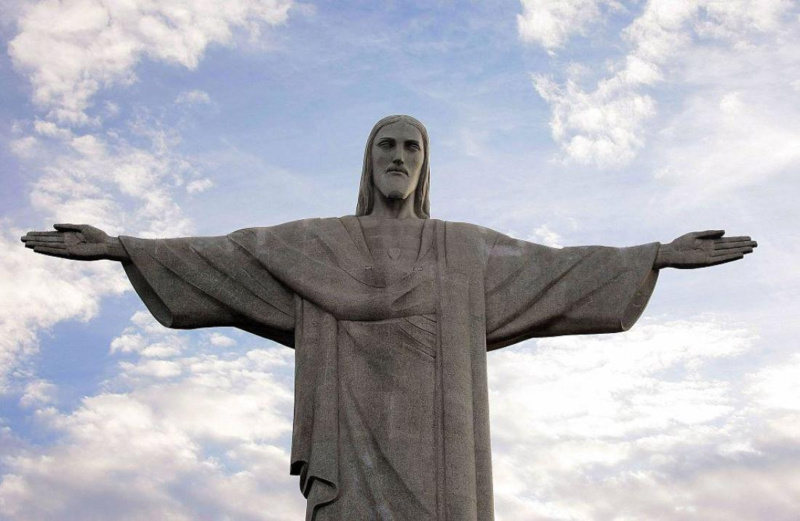
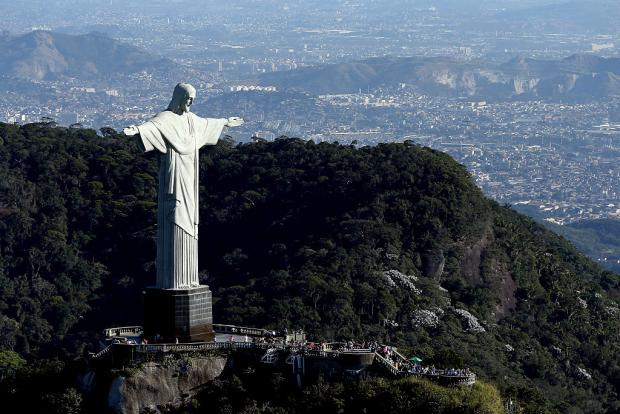
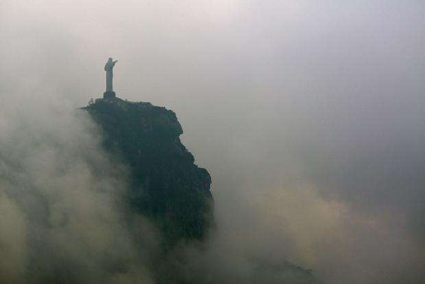
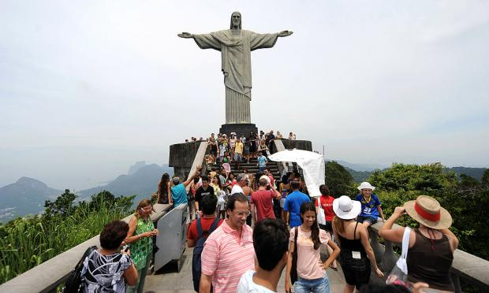
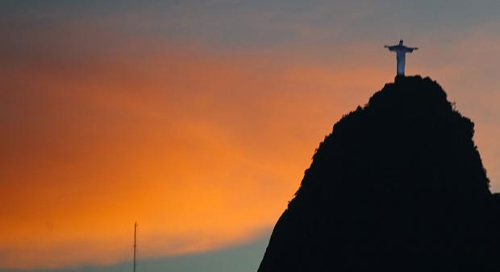

11 Facts About Rio's Christ The Redeemer
Statue
BY UZOANYA JOSEPH MARCH 3, 2018
Sign up

If you have been watching the olympics, no doubt seen
sweeping shots of the iconic Christ the Redeemer monument
overlooking Rio de Janeiro. Beyond its breath taking views, the
statue has a colorful history very different from how it does today.
Here are a few facts about Cristo Redentor, as it's known in its
native Portuguese.
1. IT CAME IN RESPONSE TO "AN ADVANCING TIDE OF GODLESSNESS."
Following the creation of the Brazilian republic in 1889, which
seperated church and state, fear began to grow amongst
Catholics that the nation was headed towards a precipice. After
World War I, followers felt they needed a symbol to counteract
what they saw as increasing "godlessness" throughout the
country. In 1920, they selected engineer Heitor da Silva Costa's
design of a statue of Christ to be situated atop Mount Corcovado
overlooking the city.
2. THE ORIGINAL DESIGN WAS VERY DIFFERENT FROM
WHAT WE SEE TODAY
Da Silva's initial sketch of christ carrying a cross
in one hand and a globe in the other. The statue, he noted, should
facing the rising sun. While the design initially won over the
project's organizers, it quickly gained the playful name "Christ
with a ball." After surveying the corcovado from various points
throughout the city and consulting with Brazilian artist Carlos
Oswald, Da Silva Costa came up with a new design: an Art Deco,
arms-wide-open Christ.
3. CONSTRUCTION TOOK NINE YEARS.

Da Silva Costa traveled to France in search of a world-class
sculptor to turn his divine design into reality. He eventually
commissioned Paul Landowski, a French-Polish sculptor who
further sharpened the statue’s Art Deco design. Over the next
several years, Landowski fashioned the 98-foot tall sculpture in
clay pieces, which were then shipped to Brazil and remade with
reinforced concrete.
4. IT'S COVERED WITH 6 MILLION STONE TILES.
Reinforced concrete, which had just recently been developed, was
one of the few materials strong enough to support the statue and
its wide-wingspan design. But Da Silva Costa and others felt
concrete was too rough for the fine contours of Christ’s image.
Afraid that his monument would end up a failure, Da Silva Costa
found inspiration in a fountain along Paris’s Champs Elysees.
Tiles lining the fountain accentuated its curves in just the way Da
Silva Costa hoped to see in his design. He immediately updated
the project’s plans, and eventually chose soapstone to craft the
tiles. According to the BBC, workers who made the tiles
frequently wrote on the back, meaning Christ the Redeemer is
littered with hidden messages.
5. WEATHER HAS TAKEN A TOLL.

Wind and rain have worn away at the statue’s stone tiles,
necessitating numerous restorations over the years. Christ the
Redeemer is also a frequent target of lightning strikes. Although
most fizzle out on its numerous lightning rods, the monument
has taken some damaging hits recently.
Just before the World Cup in 2014, lightning singed the back of
the head and zapped off the tip of a finger, leaving Rio scrambling
to make repairs before the eyes of the world were upon it.
6. IT WILL PROBABLY GET DARKER.
When Da Silva Costa decided to cover the statue with soapstone
tiles, he chose a very light colored strain from a quarry near the
city of Ouro Preto. It was the same stone used by the 18th
century Brazilian sculptor Aleijadinho, whom Da Silva Costa
greatly admired. Unfortunately, the quarry has run dry, and
restoration experts are having a hard time replicating the stones’
light gray hue when they have to replace them. A spokesman for
Brazil’s National Institute of Historic and Artistic Heritage
recently told the BBC that when the next major renovation
happens in 2020, replacement stones will be darker. "The stones
of Christ are hard to find," he said.
7. THERE'S A CHAPEL AT THE BASE.
To celebrate the monument's 75th anniversary in 2006,
authorities built a small chapel at its base. So yes, you can get
married beneath Christ the Redeemer. However, there's limited
space inside, and making the slow journey to the top (cog train
to an elevator to an escalator) in full wedding attire may not be
everyone's idea of romance.
8. A 2003 RENOVATION MADE THE JOURNEY TO THE TOP
MUCH EASIER.

For years, visitors to Christ the Redeemer had to scale around
200 steps to get from the train station to the statue. After many
complaints about accessibility, Rio decided to install a series of
escalators and elevators in 2003 to make the route easier. Today,
you can get to the statue with the same ease as getting to the top
floor of a mall.
9. A DEFACING IN 2010 WAS DEEMED A NATIONAL CRIME.
A couple of acrobatic graffiti artists scaled the statue while it was
being renovated and wrote all over the head, arms, and chest.
Rio’s mayor, Eduardo Paes, called the act a "crime against the
nation." The vandals eventually turned themselves in.
10. A CROSS OR INVITING A HUG? DEPENDS ON HOW YOU
LOOK AT IT.
Rather than depict Christ carrying a cross, Da Silva Costa
designed the figure to resemble a cross with his outstretched
arms. Scholars have noted that this symbolizes a bridge between
traditional depictions of Christ, which typically showed him
nailed to or carrying a cross, and modern ones. Today, Brazil is a
much more religiously diverse nation, and many view the statue’s
gesture as one of welcoming and peace. In 1969, Brazilian artist
Gilberto Gil wrote a song inspired by the monument called "That
Hug" ("Aquele Abraço").
11. IT'S ONE OF THE SEVEN NEW WONDERS OF THE WORLD.

In 2007, more than 100 million people voted on the
New Seven Wonders of the World from a list of 21 finalists
(the competition was put on by the New Open World Corporation, so
take that for what you will). Christ the Redeemer made the cut,
along with the Great Wall of China, Machu Picchu, and the
Roman Colosseum. Sorry Eiffel Tower—maybe next time.
All images via getty.